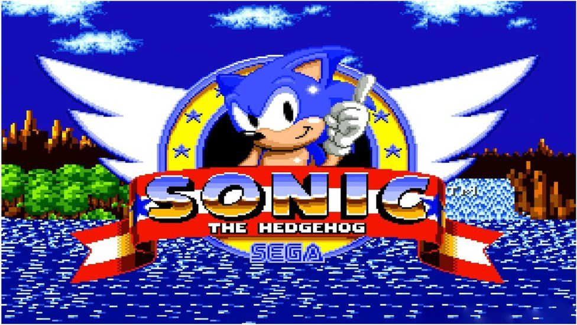

Games
Pacman

Pac-Man, a classic arcade game created by Namco in 1980, stands as an enduring icon in the realm of video gaming. At its core, Pac-Man traverses a maze, gobbling up small little dots while dodging four colorful ghosts - Blinky, Pinky, Inky, and Clyde. These spectral adversaries each possess distinct behaviors, adding different layers of strategy to the game. Along the way, Pac-Man can consume power pellets to turn the tables on his pursuers, momentarily transforming them into edible prey. Bonus fruits sporadically appear, tempting players with extra points. As the game progresses, the mazes become increasingly more complicated, the ghosts becoming more relentless. Pac-Man's influence extends beyond gaming, permeating popular culture and inspiring countless adaptations and merchandise. Its simple yet addictive gameplay and cultural impact have solidified Pac-Man's place in history as a beloved and timeless classic.
Game 2
Doom is like unlocking the gates to a pulse-pounding journey through the heart of gaming history. Created by id Software and released upon the world during 1993, Doom stands tall as the pioneering force behind the first-person shooter (FPS) genre. Picture yourself as a space marine, stranded on a Martian moon base overrun by demonic forces from the depths of hell. Armed to the teeth with an arsenal of classic weapons, from the thunderous shotgun to the devastating BFG 9000, players navigate through labyrinths filled with nightmarish creatures and adrenaline-pumping action. Doom's relentless pace, spine-chilling atmosphere, and groundbreaking graphics captivated gamers, leaving an indelible mark on pop culture. Its modding community and multiplayer mode cemented its status as a legend, spawning sequels, spin-offs, and a devoted fanbase that still thrives today. Whether you're a seasoned gamer seeking a nostalgic thrill or a newcomer ready to experience gaming's roots, Doom beckons with its timeless appeal and unbridled intensity.
Tekken 1
Tekken 1, developed by Namco and released in 1994, marks the beginning of a legendary franchise renowned for its deep combat mechanics and memorable characters. Set in the King of Iron Fist Tournament, players select from a diverse roster of fighters, each with their own unique fighting styles and motivations. From the stoic martial artist Kazuya Mishima to the enigmatic ninja Yoshimitsu, Tekken 1's characters captured the imaginations of gamers worldwide. With its fluid animation, responsive controls, and innovative 3D fighting mechanics, Tekken 1 pushed the boundaries of what was possible in arcade gaming. Its competitive multiplayer mode and thrilling single-player campaign offered endless hours of entertainment, paving the way for future installments and cementing Tekken's status as a cornerstone of the fighting game community. Whether you're a fighter or a newcomer eager to throw down, Tekken 1 invites you to test your skills in the ultimate battle for supremacy.
Sonic The Hedgehog
Introduced by Sega in 1991, revolutionized the gaming landscape with its lightning-fast gameplay and vibrant world. As the titular character, Sonic races through colorful environments to meddle with the villainous plans of the nefarious Dr. Robotnik (also known as Eggman), who seeks to conquer the world with his army of robots. With his iconic blue quills and supersonic speed, Sonic dashes through loops, hurdles over obstacles, and collects rings, all while accompanied by his loyal friends such as Tails the fox and Knuckles the echidna. Sonic's high-speed platforming challenges and catchy soundtracks captured the hearts of millions, spawning a beloved franchise encompassing games, cartoons, comics, and merchandise. Sonic's enduring legacy as a symbol of speed, adventure, and nostalgia continues to captivate audiences of all ages, making him one of the most iconic characters in gaming